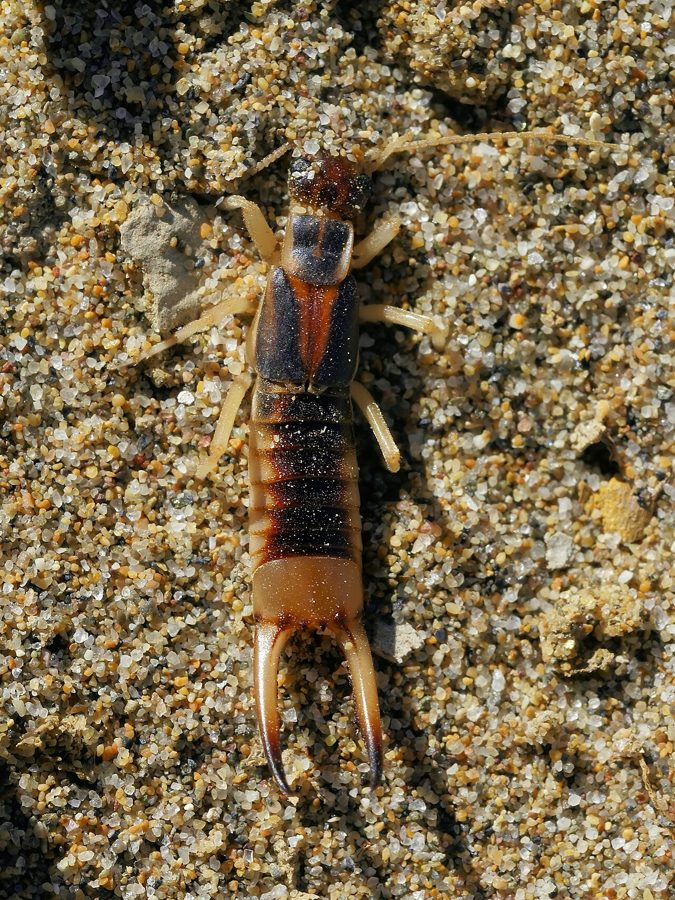

चिमटा कीड़ाShore Earwig
Labidura riparia · Labiduridae · SFL-0008

- Scientific name
- Labidura riparia (Pallas, 1773)
- Family
- Labiduridae
- Hindi
- चिमटा कीड़ा
- Status here
- native
- IUCN
- not evaluated
- Review
- not yet reviewed
When to look कब देखें
Expected mainly in March, April, May, June, July, August, September, October.
Uses and possibilities उपयोग और संभावनाएँ
Drawn from the documented uses in the profile below, where each is labelled traditional, current or a research lead. All uses →
चिमटा कीड़ा / Shore Earwig
Labidura riparia (Pallas, 1773) — Labiduridae
चिमटा कीड़ा — नदी की रेत, तालाब के किनारे और खेत की गीली मिट्टी का सबसे बड़ा ईयरविग: हल्का भूरा, धारीदार, दो-तीन सेंटीमीटर, पूँछ पर चिमटे जैसा संडासी जोड़ा जो डराने और शिकार पकड़ने के काम आता है। रात में इल्लियाँ, कीड़ों के लार्वा और मरे कीड़े खाता है, दिन में रेत में बिल बनाकर छिपता है, और मादा अंडों और बच्चों की उतनी रखवाली करती है जितनी कोई कीट करती है। "कान में घुसता है" — यह कहानी हर देश में है और कहीं सच नहीं।
Quick Identification त्वरित पहचान
| Feature | Description |
|---|---|
| Size | 20–30 mm, large for an earwig |
| Colour | Pale yellowish-brown with darker brown stripes along the body and dark marks on the head |
| Forceps | A pair of pincers at the tail: long, curved and toothed in the male, straighter and shorter in the female |
| Wings | Short leathery forewings covering folded hindwings; it flies to lights but rarely by day |
| Body | Flattened, flexible, elongate; antennae long and beaded |
| Behaviour | Runs fast; raises the forceps over its back when threatened; burrows in sand |
Field tip: On a sandy river bank or pond edge at night, turn a piece of driftwood or dung: a long pale striped insect with pincers at the back scuttles away or raises them at you. Under a bulb on a warm night it is the striped "pincer bug" among the beetles. The pinch is a harmless nip.
हिंदी — कैसे पहचानें: रात में नदी की रेत या तालाब के किनारे लकड़ी या उपला पलटिए: लंबा, हल्का भूरा, धारीदार कीड़ा जिसकी पूँछ पर चिमटा, जो भागता है या चिमटा उठाकर डराता है। बल्ब के नीचे भृंगों के बीच धारीदार "चिमटे वाला कीड़ा"। चिमटे की चुभन से बस हल्की चुटकी।
Morphology आकारिकी
Biometrics:
| Measurement | Range |
|---|---|
| Body length, excluding forceps | 16–24 mm |
| Forceps, male | 6–10 mm |
| Forceps, female | 4–6 mm |
| Eggs per clutch | 50–80 |
| Nymphal stages | 5–6, over 2–3 months |
Forceps (cerci): The earwig's signature, modified tail appendages used to seize and hold prey, to fend off rivals and predators, and in courtship. The male's are asymmetrical, curved and often toothed; the female's nearly straight.
Wings: The forewings are short hard tegmina; the hindwings are large, fan-shaped and folded with a complex origami under them, unfolded with the help of the forceps. Labidura flies, usually at night.
Defence: Glands on the abdomen release a foul-smelling fluid when the insect is seized; the forceps are the first line.
Young: Nymphs resemble pale adults without wings; the first instars stay with the mother.
हिंदी: पूँछ की संडासी असल में बदले हुए उपांग हैं जो शिकार पकड़ने, बचाव और प्रेमालाप में काम आते हैं; नर के टेढ़े और दाँतेदार, मादा के सीधे। अगले पंख छोटे और कड़े, पिछले बड़े और पंखे की तरह बारीक मुड़े हुए, जिन्हें खोलने में संडासी मदद करती है। पकड़ो तो पेट से बदबूदार तरल छोड़ता है।
Behaviour & Ecology व्यवहार और पारिस्थितिकी
A worldwide insect of sandy shores and damp open ground, abundant along the rivers and ponds of the plains. By day it lies in a burrow or under cover; by night it hunts, taking caterpillars, maggots, beetle larvae, mole-cricket nymphs, the eggs of other insects and whatever dead creatures the water has thrown up, and it is one of the useful predators of cutworms in vegetable fields and cotton. It runs down prey and holds it with the forceps while it chews.
Its maternal care is famous. The female digs a chamber, lays a clutch, cleans and turns the eggs, drives off intruders, and after hatching feeds and guards the nymphs for weeks before they disperse: for an insect, a long childhood. Red-wattled Lapwing, Spotted Owlet, Asian Common Toad, Asian House Gecko, House Centipede and the Indian Red Scorpion eat it.
हिंदी: दुनिया भर के रेतीले किनारों और नम खुली ज़मीन का कीट, मैदानों की नदियों और तालाबों के किनारे भरपूर। दिन में बिल या छिपने की जगह, रात में शिकार — इल्लियाँ, मक्खी के लार्वा, भृंग के लार्वा, झींगुर के बच्चे, दूसरे कीड़ों के अंडे, और पानी से बहकर आए मरे जीव; सब्ज़ी के खेत में कटवर्म का एक उपयोगी शिकारी। मादा बिल में अंडे देती है, उन्हें साफ़ करती और पलटती है, और बच्चों को हफ़्तों खिलाती-बचाती है — कीटों में एक लंबा बचपन। टिटहरी, उल्लू, भेंडुक, छिपकली, कनखजूरा और बिच्छू इसे खाते हैं।
Life Cycle / Phenology जीवन चक्र
| Stage / season | Event |
|---|---|
| March–October | Adults active; several overlapping generations in warm weather |
| Egg, 1–2 weeks | In a burrow chamber, tended by the mother |
| Nymph, 2–3 months | Five or six moults; the first weeks with the mother |
| Adult, several months | Mates, burrows, overwinters |
| November–February | Adults and late nymphs in burrows, inactive in cold spells |
हिंदी: गरम महीनों में कई पीढ़ियाँ; अंडे बिल में माँ की देखरेख में एक-दो हफ़्ते; बच्चे दो-तीन महीने, पहले हफ़्ते माँ के साथ; सर्दी बिल में।
Host Plants or Prey आहार
- Caterpillars such as Tobacco Cutworm, fly maggots, beetle larvae including Elephant Dung Beetle grubs, African Mole Cricket and Two-Spotted Cricket nymphs, insect eggs, ants, and dead insects and fish fry stranded on banks; some plant matter and fallen fruit.
Predators / Natural Enemies शत्रु
- Birds: Red-wattled Lapwing, Spotted Owlet, House Crow, Common Myna, wagtails on the shore.
- Others: Asian Common Toad, Marbled Toad, Asian House Gecko, House Centipede, Indian Red Scorpion, wolf spiders.
- Parasites: tachinid flies and nematodes.
Agricultural / Human Relevance कृषि प्रासंगिकता
Beneficial. Studied in cotton, vegetable and sugarcane fields as a predator of cutworms, armyworms and bollworm larvae; in some field trials it is among the most important ground predators of caterpillars. It costs nothing to keep: cover on the ground, no broad-spectrum sprays.
Harmless to people. It does not enter ears, a myth found in English, Hindi and a dozen other languages; the pinch of the forceps is trivial; the defensive fluid smells but does no harm. It is not a crop pest, though it may nibble ripe fruit on the ground.
Traditional and Ethnobotanical Use: none recorded, beyond the ear story.
Today. Common, unnoticed, occasionally killed as a "scorpion-like" thing at lights.
Research direction (a lead, not a result). The predatory earwigs are candidates for conservation biological control in Indian vegetable fields; counting them under cover boards in sprayed and unsprayed plots is a simple school project with a real answer.
हिंदी: उपयोगी: कपास, सब्ज़ी और गन्ने के खेतों में कटवर्म और इल्लियों का शिकारी; कुछ प्रयोगों में ज़मीन के सबसे ज़रूरी इल्ली-शिकारियों में। इसे रखने में कुछ नहीं लगता — ज़मीन पर आड़ रहने दें, मोटे कीटनाशक न डालें। इंसान के लिए हानिरहित: कान में नहीं घुसता (यह झूठ हर भाषा में है), चुटकी मामूली, बदबू नुकसान नहीं करती। बल्ब के नीचे इसे "बिच्छू जैसा" समझकर मारा जाता है।
Expected Locally स्थानीय रूप से अपेक्षित
Not a field record. Written from published accounts for eastern Uttar Pradesh. No confirmed local sighting yet — if you have seen it, that is what the atlas needs.
अभी तक स्थानीय पुष्टि नहीं। यह विवरण प्रकाशित स्रोतों से है, किसी अवलोकन से नहीं।
To be expected on the sandy banks of the Kuwano, Rapti and Ghaghara, at pond margins, under debris in fields and at lights on warm nights across the district. A photograph of one with its forceps raised, or of a mother with her eggs under a lifted stone, is a confirmed record.
Distribution वितरण
Global range: Cosmopolitan in warm and temperate regions on every continent except Antarctica.
In India: Throughout the plains and foothills.
In Uttar Pradesh: Common along rivers and in irrigated land.
In Basti district / eastern UP: Expected on every sandy bank and in every field.
Research Questions शोध प्रश्न
Anyone can investigate these | कोई भी इन प्रश्नों की जाँच कर सकता है
- How many earwigs are under ten pieces of debris on the river bank? / नदी किनारे दस लकड़ी-पत्थरों के नीचे कितने चिमटा कीड़े? — Count at night.
- Can you find a mother with eggs? — Lift stones gently in April; replace them.
- What does one eat in a jar overnight with a cutworm? / एक रात में जार में कटवर्म के साथ रखें तो क्या खाता है? — Watch.
- Are there more under cover boards in an unsprayed plot than a sprayed one? — Lay boards; count weekly.
- Does anyone believe it enters ears, and where did they hear it? — Ask; the story's travels are worth a note.
Similar Species मिलती-जुलती प्रजातियाँ
| Species | How to tell apart | हिंदी |
|---|---|---|
| Smaller earwigs (Forficula, Euborellia, Nala) | Under 15 mm, dark brown or black, unstriped; in gardens and under bark | छोटे, काले, धारी नहीं |
| Rove beetles (Staphylinidae) | Also long and short-winged, but no forceps; the tail tip curls up like a scorpion's | पूँछ पर चिमटा नहीं |
| House Centipede and small centipedes | Many legs, not six | बहुत सी टाँगें |
| Indian Red Scorpion, young | Eight legs, a true tail with a sting, and pincers at the front, not the back | चिमटे आगे, डंक पीछे |
Field rule: A large pale striped insect with six legs and a pair of pincers at the tail, on sand or at a light, is the shore earwig.
Taxonomy & Classification वर्गीकरण
Original description. Described by Peter Simon Pallas in 1773 as Forficula riparia in Reise durch verschiedene Provinzen des Russischen Reichs 2: 727, from the banks of the Irtysh in Siberia. Placed in Labidura Leach, 1815. Riparia, "of river banks".
Subspecies. A number of forms have been named across its vast range; most authors treat it as one variable species, and molecular work suggests several cryptic lineages.
Family and order placement. Labiduridae, the striped earwigs; order Dermaptera, the earwigs, some 2,000 species worldwide and about 300 in India.
Phylogenetic notes. Dermaptera are an ancient order related to the stoneflies and grasshoppers; the forceps and the folded hindwing are shared by nearly all. Labidura is among the largest and most widespread genera.
IUCN status rationale. Not evaluated. Cosmopolitan and common.
Photo Gallery फोटो गैलरी
Photos needed आवश्यक फोटो
- [ ] Adult with forceps raised (चिमटा उठाए)
- [ ] Male and female forceps side by side (नर-मादा)
- [ ] Mother with eggs in a burrow (अंडों के साथ माँ)
Atlas Connections संबंधित प्रजातियाँ
- Tobacco Cutworm — the caterpillar it hunts in vegetable fields
- House Centipede and Indian Red Scorpion — the other pincer-bearers of the village, and its predators
- Red-wattled Lapwing — hunts it on the same sandy banks
- African Mole Cricket — shares the burrowed river sand
References संदर्भ
- Pallas, P.S. (1773). Reise durch verschiedene Provinzen des Russischen Reichs, vol. 2, p. 727. St. Petersburg. [original description, as Forficula riparia]
- Burr, M. (1910). The Fauna of British India, including Ceylon and Burma. Dermaptera (Earwigs). Taylor and Francis, London.
- Srivastava, G.K. (2003). The Fauna of India and the Adjacent Countries. Dermaptera, Part II. Zoological Survey of India, Kolkata.
- Lamb, R.J. (1976). Parental behavior in the Dermaptera with special reference to Forficula auricularia. Canadian Entomologist 108(6): 609–619.
- Shepard, M., Waddill, V. & Kloft, W. (1973). Biology of the predaceous earwig Labidura riparia (Dermaptera: Labiduridae). Annals of the Entomological Society of America 66(4): 837–841.
- Costa, J.T. (2006). The Other Insect Societies. Harvard University Press, Cambridge, Mass. (Dermaptera chapter)
- Kočárek, P. (2011). Dermaptera. In Zhang, Z.-Q. (ed.), Animal biodiversity: an outline of higher-level classification. Zootaxa 3148: 199–200.
- GBIF Occurrence Data — Labidura riparia, India (2026).
Source file: species/fauna/soil_fauna/shore_earwig.md